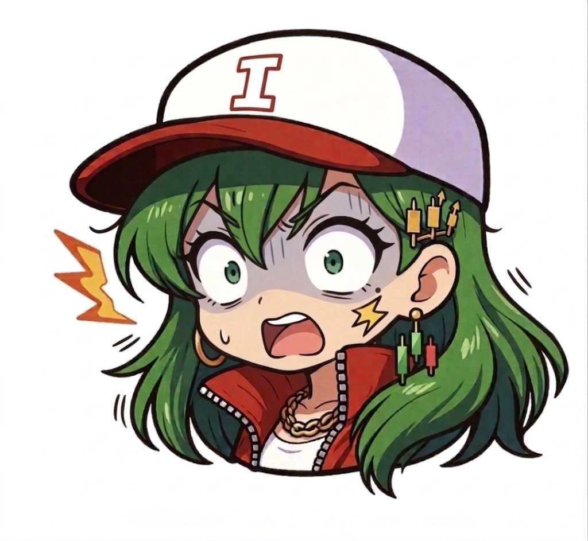

今週の投資判断3ポイント
まずここだけ。細かい数字は下で。
金利の蛇口はいま絞ったまま。株が動くのは「次に蛇口をどっちに回すか」の期待の振れが主役になりやすい、って理解でOK。
ガソリンや電気のコストが上がると、物価統計が動く。中銀は物価を見て蛇口を決めるから、相場は敏感になる。
同じ「インフレ」でも、国によって今すぐ利上げか様子見かが違う。円やドルの強弱は、そのズレから生まれることが多い。

チャートマスター:
次は、今日“強い/弱い”がどこに出たか。セクターでざっくり体温を見るじゃろう。
セクター別の体温（イメージ）
S&P500の11分野の相対的な強さ。バーが長いほど「その日の主役に近い」イメージじゃ。
エネルギーとITが伸びやすい日は、「景気期待」と「金利の心地よさ」のどっちが勝ってるか」を見比べると読みが進むじゃろう。
数値は執筆時点の最新表示ベース（表示遅延の可能性あり）。
導入：ニュース、多すぎ問題

ヒロ子:
「パウエル」「据え置き」「反対票」「売り五月」……なんか全部大事っぽいんだけど、あたしの頭パンクしそう。株、上がるの？下がるの？どっち見ればいいの？

チャートマスター:
今日の整理は二つに分けるのがええ。「政策の結果（金利は動いたか）」と「政策の物語（次は誰が蛇口を握るか）」じゃ。
いま相場がザワついてるのは後者——つまり期待の振り子が大きい局面、と捉えると迷子にならんよ。

ヒロ子:
よし、じゃあ世界の指数とかドル円とか、いったん一覧で眺めよ。
グローバル市場サマリー
「株だけ」見てるとズレる。金利とエネルギーをセットで見ると、ニュースの意味がつながる。
数値は執筆時点の最新表示ベース（表示遅延の可能性あり）。
| エリア | 今日の見立て（超ざっくり） |
|---|---|
| 米国 | 金融政策の「次の物語」に反応しやすい |
| 日本 | 円と輸出企業のバランスが毎日のテーマになりやすい |
| 欧州 | 米国と温度差が出ると、為替が動きやすい |
チャートマスター:
さて、いま起きてることを「水道の蛇口」でほどいてみようかのう。
背景：蛇口と「中銀の会議室」
中央銀行はざっくり言うと、経済というお風呂にお湯（お金の量と金利のしやすさ）を入れる係じゃ。蛇口を締める（引き締め）と借りにくくなる。株は「将来の夢」を価格にするから、蛇口の見通しが変わると反応しやすい。
4月下旬の会合では、市場の注目どおり政策金利の据え置きが報じられた。同時に、声明の文言や投票に割れ目が見えた、という整理ができる。パウエル議長は役割の移行期にあり、後任人事やFRB内のバランスも「物語」の一部になる——とニュースは書きがちじゃ。
一次情報の例: Reuters（会合当日の流れ）、Reuters（主要中銀のグラフィック記事）、Reuters（5月の市場テーマ）。

ヒロ子:
え、反対票って……中銀の人たちも意見バラバラなの？あたし、全員仲良しだと思ってた。
チャートマスター:
仲良しもするが、役割は違う。景気と物価と金融の安定——そのトレードオフで、意見が割れることはある。
大事なのは「割れた」という事実そのものより、市場がどの言葉に過剰反応したかじゃ。過剰反応は、すぐに戻ることもあれば、トレンドになることもある。
まとめ対話：今日の誤解をひとつ潰す
ヒロ子:
「据え置き＝株は安心」って思ってたけど、違うの？
チャートマスター:
安心は一時的になりがちじゃ。据え置きでも、声明がタカ派的に読めた日は金利が動く。金利が動けば、株の割引計算も動く。
つまり「結果が同じでも、読み方が変わる」ときがある、ということじゃよ。
ヒロ子:
なるほど……ニュースは「答え」じゃなくて「材料」なんだ。じゃあ次、表でニュース整理いこ。
チャートマスター:
ええな。表は「全部追う」ためじゃない。見る順番を固定するためじゃ。
世界ニュースの整理（直近48時間の“型”）
ここではX投稿ではなく、論点ごとに一次系の見出しを並べた。数字の細部は各リンク先で。
| 論点 | 要旨 | リンク |
|---|---|---|
| 米金融政策 | 据え置きと人事・内部分岐が同時に注目された | Reuters |
| 主要中銀 | 米欧などのスタンス差が為替・金利に波及しうる | Reuters |
| 5月のカレンダー | イベント集中の月としての見立てが語られることがある | Reuters |
ヒロ子:
次、なんかプロっぽい指標ダッシュボードっしょ。ビビらないでいくわ。
底打ち・熱量のチェック（ざっくり目安）
上がりすぎは「パニック寄り」、下がりすぎは「油断寄り」。急変の方が意味が大きいことが多い。
成長株の割引率の芯。ここが跳ねる日は、ITが揺れやすいイメージ。
労働市場が強すぎると「インフレ再燃→蛇口は緩めにくい」読みが出やすい。カレンダーに印じゃ。
企業のコストと家計の気分の両方に効く。地政学ニュースとセットで見る。
数値は執筆時点の最新表示ベース（表示遅延の可能性あり）。
過去の類似：「声明がタカ派に読めた日」
歴史は繰り返さないが、韻を踏む。過去にも、政策レートは据え置きでも、声明の一行で金利が跳ね、翌日に株が反転した局面は何度もある。いま覚えるべきはパターン名——「据え置き＝無風」ではない、ということじゃ。
学習用の一般論であり、特定の銘柄の推奨ではありません。
チャートマスター:
強気と弱気、分岐点を短く置いておくわい。
強気シナリオ / 弱気シナリオ
- インフレの鈍化が続くデータが積み上がる
- 地政学リスクが落ち着き、エネルギーが落ち着く
- 金利が期待より下がる（蛇口の見通しが緩む）
- 雇用が強すぎて、利下げ期待が後退する
- 原油高が続き、物価統計が再加速する
- 主要指数が重要線を割り、トレンドが崩れる
分岐点：次の米雇用統計、主要中銀のイベント、そして金利（米10年）の急変。
個別株は「全部」見ない
初心者ほど銘柄を増やしがちじゃが、まずは指数とセクターで体温を見る。個別は自分が生活で触れる会社から1〜2銘柄で十分じゃ。
| 視点 | 恩恵を受けやすい側（例） | 逆風を受けやすい側（例） |
|---|---|---|
| 原油高 | エネルギー関連 | 燃料コストが重い運輸など |
| 円安 | 海外売上比率が高い製造業など | 輸入コストが重い内需など |
※銘柄はあくまで例。投資判断は各自の責任で。
今日のトレンド（話題の見方）
SNSは早いが、ノイズも多い。やることは一つでええ。一次→指数→自分のルールの順番を守るんじゃ。
今日から一つだけやれること
スマホのホーム画面に「次の米雇用統計の日付」を1行メモする（中銀と同じカレンダーの見方の練習）。
この記事は教育目的の一般情報であり、特定の金融商品の売買を勧めるものではありません。
ヒロ子:
今日の主線は「据え置き＝終わり」じゃなくて、期待の振れってことね。あとカレンダー1個。これなら覚えられる。
チャートマスター:
ええ。一次の見出しで論点を決め、指数で体温を見る。それからに銘柄じゃ。焦りは相場の敵である。
ヒロ子:
了解。次はその雇用統計の日、一緒にリアクション見よっか。
チャートマスター:
望むところじゃ。読む順番が身についてきたら、もう一段階いけるようになるわい。